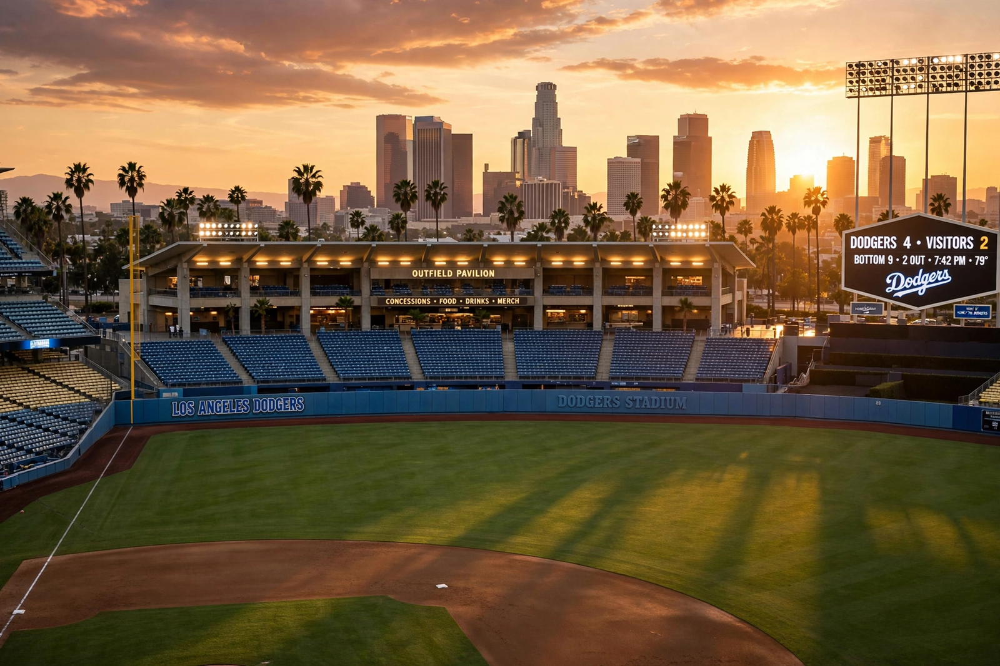

From Wikipedia, the free encyclopedia
| Los Angeles Dodgers | |
|---|---|
 Dodger Stadium at sunset with the downtown Los Angeles skyline beyond the outfield | |
| Founded | 1883 (Brooklyn); moved to Los Angeles in 1958 |
| Ballpark | Dodger Stadium (since 1962) |
| League | Major League Baseball, National League West |
| World Series titles | 8 (1955, 1959, 1963, 1965, 1981, 1988, 2020, 2024) |
The Los Angeles Dodgers are an American professional baseball team based in Los Angeles, California. Founded in Brooklyn, New York, in 1883, the franchise — long known as the Brooklyn Dodgers, the beloved "Bums" — won its only Brooklyn championship in 1955 before moving west in 1958, a relocation that reshaped American sport. In Brooklyn the club had made history by signing Jackie Robinson in 1947, breaking Major League Baseball's colour barrier. Dodger Stadium, opened in 1962 in Chavez Ravine, is the largest baseball stadium by seating capacity and the third oldest in the majors.
Under manager Walter Alston and then Tommy Lasorda, the Dodgers won championships in 1959, 1963, 1965, 1981 and 1988 — the last famous for Kirk Gibson's walk-off home run in Game 1 against Oakland. After a 32-year drought the club, rebuilt under the Guggenheim ownership with perennially baseball's highest payroll, won the World Series in the pandemic-shortened 2020 season and again in 2024, defeating the New York Yankees. The signing of Japanese superstar Shohei Ohtani in December 2023 on a record ten-year, $700 million contract headlined the club's modern era. The Dodgers' rivalry with the San Francisco Giants, carried west from New York, is among baseball's oldest.
Categories: Los Angeles Dodgers | Baseball teams in Los Angeles | National League West